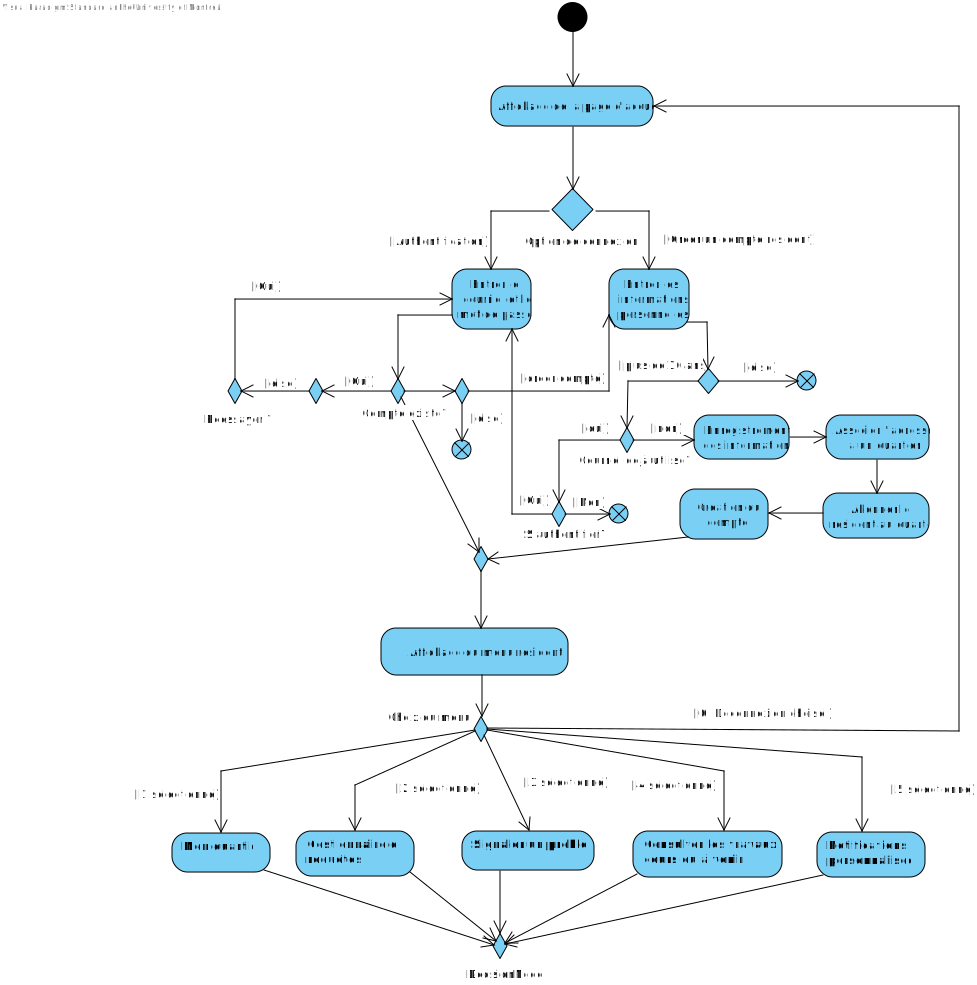

Cadre du projet
Introduction
La vie quotidienne des habitants de la ville de Montréal est affectée par les nombreux travaux de constructions, qui causent souvent des entraves à la circulation. Notre client juge que les mesures mises en place, comme le service Info entraves et travaux, sont insuffisantes, et que les résidents devraient pouvoir participer plus activement à la plannification. Nous proposons donc une application nommée MaVille qui a pour but d'améliorer la communication entre les résidents et les intervenants afin de minimiser les impacts des travaux.
Échéancier
Semaine du 16 au 22 septembre:
Élaboration des questions à poser au client (Anthony et Mahdi)
Communication avec le client (toute l'équipe)
Création de la structure pour le prototype (Louis-Philippe)
Élaboration des cas d'utilisation de l'inscription et de
l'authentification (Anthony)
Semaine du 23 au 29 septembre:
Création d'une liste de cas d'utilisation grâce aux réponses du
client (Anthony)
Début de la conception des graphiques de cas d'utilisations et
d'activités (Louis-Philippe)
Poursuite de l'élaboration des scénarios (toute l'équipe)
Début de la rédaction des besoins non-fonctionnels, des risques et
du glossaire (Mahdi)
Semaine du 30 septembre au 6 octobre:
Élaboration des besoins matériels et des solutions de stockage
et d'intégration (Mahdi)
Programmation et "debugging" du prototype (toute l'équipe)
Du 7 octobre au 11 octobre (remise de l'analyse):
Peaufinement du rapport et du prototype, révision des
exigences,
vérification mutuelle du travail des membres de l'équipe
Reste d'octobre jusqu'à mi-novembre:
Conception (Devoir 2)
Mi-novembre à décembre:
Implémentation et lancement de l'application (Devoir 3)
Hypothèses
Lors de ce projet nous avons comme hypothèse que les résidents sont bien capable d'utiliser le systeme, dont qu'ils ont le matériels
adéquoit pour l'utiliser,
sans oublier que ça soit assez intuitif à utiliser pour permettre de s'ouvrir un maximum de monde. On a aussi
admis qu'ils sont au courant du but réel qui est
donc par rapport aux travaux public et non autre choses ou d'autres domaines qui sont
dans le domaine privé/particulier.
Bien sûr on considère aussi que la ville est capable d'assurer sa fonctions par rapport aux travaux comme le fait de respecter les préférences des requêtes
et d'être capable de fournir des mises à jours fréquentes des travaux pour les utilisateurs, sans oublier qu'ils ue certaines responsabilité sur un travail
une fois celui-ci confirmé et débuté.
Exigences
Nous avons préparé un glossaire rassemblant les termes et expressions clés caractérisant l'application MaVille.
Glossaire
- Intervenant
- L'acteur qui va s'occuper des soumissions des travaux et de leurs gestions.
- Résident
- L'acteur qui va interagir avec le système pour envoyer des demandes de travaux ou bien consulter les nouvelles mises à jour.
- Compte Intervenant/Résident
- Compte permettant aux intervenants d'utiliser les fonctionnalités liées à leurs roles.
- Abonnement
- Système permettant de s'abonner à un lieu pour pouvoir être à jour sur les changements/recevoir des notifications personnalisées.
- Notification personalisée
- Fonctionnalité qu'un acteur peut activer afin d'être toujours à jour sur un lieu pour lequel il est abonné.
- Requête de travail
- Demande envoyée par un Résident/Intervenant pour faire une proposition de travail pour un lieu donné.
- Suivie d'une requête/travaux
- Les acteurs peuvent aller dans la page d'une requête de travail qui a été soumise, et s'informer sur l'état/l'avancement de celle-ci.
- Plage horaire
- Heures qui pouvant être choisis pour des proposition de travaux.
Cas d'utilisation
Notes à propos du diagramme
- Le système de notifications est un acteur secondaire à plusieurs CUs.
C'est pour montrer de manière efficace quelles actions vont mener à un envoi
de notifications aux utilisateurs.
- Pour le résident, le CU "S'authentifier" est inclu dans chacun de ces CUs,
mais l'inclusion n'est pas directement affiché pour ne pas surcharger le diagramme.
Scénarios
Scénario principal
- L'utilisateur choisit l'option "Créer un compte comme résident" à l'ouverture de l'application.
- L'utilisateur entre sa date de naissance.
- Le système valide que l'utilisateur a plus de 16 ans.
- L'utilisateur entre son nom complet.
- L'utilisateur entre son adresse courriel.
- Le système vérifie que l'adresse courriel n'est pas utilisée par un autre compte.
- L'utilisateur entre un mot de passe, un numéro de téléphone (optionnellement) et une adresse résidentielle.
- Le système crée le compte résident.
- Le système associe l'adresse résidentielle du résident à un quartier.
- Le système de notifications ajoute le quartier aux abonnements du résident.
- Le système affiche les différents menus de l'application.
Scénarios alternatifs
Scénario principal
- L'utilisateur choisit l'option "Créer un compte comme intervenant" à l'ouverture de l'application.
- L'utilisateur entre son identifiant de la ville.
- Le système valide l'identifiant.
- L'utilisateur entre son nom complet.
- L'utilisateur entre son adresse courriel.
- Le système vérifie que l'adresse courriel n'est pas utilisée par un autre compte.
- L'utilisateur entre un mot de passe.
- L'utilisateur choisit un type d'entreprise (publique, privée, particulière)
- Le système crée le compte intervenant.
- Le système affiche les différents menus de l'application.
Scénarios alternatifs
Scénario principal
- L'utilisateur choisit l'option "S'authentifier" à l'ouverture de l'application.
- L'utilisateur entre son nom et son mot de passe.
- Le système valide les informations fournies.
- S'il y a eu des nouvelles notifications auparavant, le système de notifications les affichent.
- Le système affiche les menus appropriés en fonction du rôle de l'utilisateur (Intervenant ou Résident).
Scénarios alternatifs
Scénario principal
- L’utilisateur choisit l'option "Soumettre une requête de travail".
- Il entre le titre du travail à réaliser.
- Il entre une description détaillée de sa requête.
- Il sélectionne le type de travail parmi la liste.
- Il entre la date de début espérée.
- Le système envoie la requête aux intervenants.
Scénarios alternatifs
Scénario principal
- Le résident choisit l'option "Faire le suivi d'une requête".
- Le système affiche les requêtes actives et, pour chacune, indique si un intervenant a posé une candidature.
- Le scénario se termine.
Scénarios alternatifs
Scénario principal
- Le résident sélectionne un projet de travaux terminé.
- Le système affiche les avis des autres résidents sur ce projet.
- Le résident sélectionne l'option "Donner son avis".
- Il entre un niveau de satisfaction sur 5, puis explique son avis sur le projet et l'intervenant.
Scénarios alternatifs
Scénario principal
- L'utilisateur sélectionne le menu "Préférences des résidents".
- Le système affiche les plages horaires où les résidents préfèreraient avoir des travaux dans leur quartier.
- Si l'utilisateur est un résident, le système lui donne la possibilité de soumettre sa propre préférence.
- Le scénario se termine.
Scénarios alternatifs
Scénario principal
- Le résident sélectionne l'option "S'abonner".
- L’utilisateur entre le nom d’une rue/d’un quartier
- Le système enregistre cette rue/ce quartier dans le compte du résident comme étant « Favoris »
- Le système de notifications enverra des notifications au résident lorsque ce sera nécessaire.
Scénarios alternatifs
Scénario principal
- Sur le menu principal, le résident sélectionne l'option "Consulter les travaux en cours/prévus".
- Il sélectionne la rue/le quartier souhaité(e).
- Il sélectionne le filtre souhaité: Par quartier, par type de travaux ou par rue.
- Le système affiche les travaux en cours et prévus.
Scénarios alternatifs
Scénario principal
- Sur le menu principal, le résident sélectionne l'option "Signaler un problème".
- Il entre son nom, son adresse courriel, son adresse de résidence, le type du problème, et la description du problème.
- Le système envoie le formulaire à la ville.
Scénarios alternatifs
Scénario principal
- Sur le menu principal, l'intervenant choisit l'option « Soumettre un nouveau projet »
- Il entre les informations sur le projet : Titre, description, type de travaux, quartiers affectés, rues affectées, dates de début et de fin, horaire.
- Le système affiche les conflits avec les préférences des résidents et demande à l'intervenant s'il veut modifier les dates.
- Le système soumet le projet à la ville.
- Le système marque le projet comme « Prévu » dans la liste des travaux.
Scénarios alternatifs
Scénario principal
- Sur le menu principal, l'intervenant choisit l'option "Requêtes des résidents".
- Il choisit un filtre: Par type, par quartier ou par date de début.
- Le système affiche les requêtes actives des résidents, s'il y en a.
Scénario principal
- L'intervenant sélectionne la requête pour laquelle il veut soumettre une candidature.
- Le système vérifie qu'il n'y a pas d'autres candidatures actives pour la requête.
- Le système envoie la candidature au résident affecté.
- Le système de notifications notifie le résident à ce sujet.
Scénarios alternatifs
Scénario principal
- Sur le menu principal, l'intervenant choisit l'option "Mettre à jour les informations d'un chantier".
- Le système affiche les projets gérés par l'intervenant.
- L'intervenant sélectionne un projet.
- Il sélectionne une information à changer: la description, la date de fin, ou changer le statut du projet.
- Il modifie l'information.
- Le système lui donne le choix de modifier une autre information ou de sauvegarder les changements.
- L'intervenant choisit d'enregistrer les changements.
- Le système met à jour le projet.
- Le système de notifications notifie les résidents affectés.
Scénarios alternatifs
Diagramme d'activités
Inscription et authentification
Mon quartier
Gestionnaire de requêtes
Signaler un problème
Consulter les travaux en cours où à venir

Notifications personnalisées

Analyse
Risques
- Problèmes de modérations des requêtes : Il y aura certainement des requêtes de travaux non sérieuses/fausses qui vont être envoyer, il faudrait alors instaurer un système algorithmique de modération pour gérer toutes les requêtes non-pertinentes.
- Risque de sécurité : Il est essentiel de garantir que le système soit robuste du côté des entrées utilisateurs, afin d'éviter que des individus malveillants puissent injecter du code dans les champs de saisie et compromettre le serveur. De plus, il est impératif de chiffrer toutes les données sensibles (comme les mots de passe et les adresses résidentielles) des utilisateurs avant leur stockage dans la base de données. Cela permet de prévenir le vol d'informations sensibles.
- Risque de performance : Étant donné que notre système est ouvert aux nouveaux utilisateurs, il y a un risque que le nombre d'inscriptions augmente rapidement si sa popularité croît. Il est donc essentiel d'assurer une scalabilité adéquate. Il faut également veiller à ce que le code soit optimisé pour la performance. En particulier, il faudrait s'assurer de ne pas avoir trop de fonctions d'ordre quadratique afin de garantir des performances soutenues.
- Risque d'exceptions dans le code: Dans une application en ligne de commande comme celle-ci, il est très probable que l'utilisateur commette des "typos". Il faudra donc être rigoureux avec la vérification des entrées des utilisateurs et gérer les exceptions (ne pas assumer qu'ils vont tout faire parfaitement). Cela évitera les problèmes comme des plantages (crash).
- Bugs imprévus : Ce type de système, en raison de sa complexité, peut potentiellement contenir un grand nombre de bugs. Comme il sera ouvert au public, il est probable que certains de ces bugs ne soient découverts qu'une fois que les utilisateurs commenceront à l'utiliser. Cela rend essentiel une surveillance continue et des mises à jour régulières pour corriger les problèmes au fur et à mesure qu'ils apparaissent.
Besoins non-fonctionnels
- Sécurité : L’application tiendra compte de beaucoup d’information sensible sur les utilisateurs (adresses, lieux fréquentés et autres). Cette information doit rester confidentielle. Aussi, la vérification et la protection des identifiants de la ville (codes à 8 chiffres) pour les intervenants doit être rigoureuse.
- Performance élevée : Il faut que l’information sur une rue/adresse/un quartier soit mise en ligne et visible par tous très rapidement après sa publication pour qu’il n’y ait pas de mauvaises surprises pour les résidents (moins d’une minute).
- Disponibilité : L’application doit être accessible 99.99% du temps (ou presque) pour pouvoir s’informer sur l’état d’un lieu à tout moment.
- Fiabilité : Les données utilisateur importantes au bon fonctionnement de l’application (adresses courriels, mots de passe, abonnements aux différent(e)s rues/adresses/quartiers et autres) doivent être sauvegardées adéquatement afin de ne pas les perdre, sans quoi l’application serait inutile.
- Accessibilité : En l’absence d’interface graphique, la navigation dans l’application devra être aussi intuitive que possible étant donné la contrainte de l’usage en ligne de commande.
Besoins matériels
L'application sera en ligne de commande, donc les utilisateurs auront besoin d'un ordinateur avec Java, puisque l'application est accessible par la console (donc ne fonctionnerait pas sur un appareil mobile). Pour développer l'application, notre équipe utilisera des ordinateurs avec un JDK installé. L'utilisation de la mémoire ne devrait pas être un souçis, car le programme tel qu'il est décrit ne devrait pas être très "lourd" à rouler.
Solution de stockage
Nous allons chiffrer et stocker les données de nos utilisateurs dans une base de données soit MongoDB / MySQL ou dans une fichier format .csv, afin de mieux organiser et structurer l'information. L'encryption des données nous assure une sécurité plus élevée des données de nos utilisateurs.
Solution d'intégration
Le service "Info entraves et travaux" est très similaire à l'application MaVille. Il serait possible que ces services collaborent et ils pourraient même partager la même base de donnée. Par exemple, "Info entraves et travaux" pourrait demeurer un service en ligne sans authentification qui permet simplement de rechercher des entraves, tandis que MaVille agirait comme une extension de ce service ayant plus de fonctionnalités, comme donner son avis, recevoir des notifications pour des entraves et communiquer avec les intervenants.
Prototype
Indiquez ici les informations nécessaires (commande d'exécution, comptes préconfigurées) pour exécuter et tester le prototype.